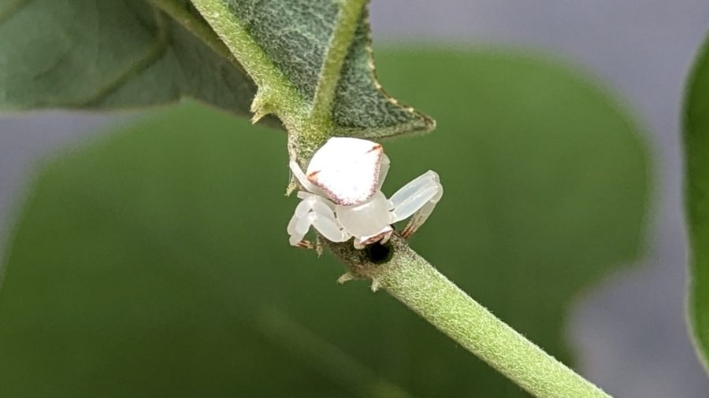

प्रक्षेप्य केकड़ा मकड़ीProjecting Crab Spider
Thomisus projectus · Thomisidae · SPD-0051

- Scientific name वैज्ञानिक नाम
- Thomisus projectus Tikader, 1960
- Family कुल
- Thomisidae
- Hindi हिंदी
- प्रक्षेप्य केकड़ा मकड़ी
- Local names स्थानीय नाम
- projecting crab spider, thomisus projectus, phool makdi
- Status here यहाँ की स्थिति
- native
- Movement आवागमन
- Resident, here all year
- Known from कहाँ दर्ज
- Others have published records from the wider Awadh–Purvanchal plain, none yet from Basti–Ayodhya अवध–पूर्वांचल से दूसरों के प्रकाशित अभिलेख, बस्ती–अयोध्या से अभी नहीं
- IUCN IUCN
- not evaluated
- Review समीक्षा
- not yet reviewed
When to look कब देखें
Present all year. साल भर मौजूद।
Uses and possibilities उपयोग और संभावनाएँ
Drawn from the documented uses in the profile below, where each is labelled traditional, current or a research lead. All uses →
Tell it apart from इनसे अलग पहचानें
प्रक्षेप्य केकड़ा मकड़ी / Projecting Crab Spider
Thomisus projectus Tikader, 1960 — Thomisidae
प्रक्षेप्य केकड़ा मकड़ी — बगीचों और खेतों में फूलों पर घात लगाकर बैठने वाली एक केकड़ानुमा मकड़ी, जिसके सिर पर सींग जैसे उभार और पेट पर दो नुकीले कूबड़ होते हैं तथा जो केकड़े की तरह बगल में चलती है।
Quick Identification त्वरित पहचान
| Feature | Description |
|---|---|
| Lateral gait | Laterigrade leg orientation allowing effortless sideways and backward crab-like walking |
| Carapace horns | Prominent horn-like conical projections or tubercles rising above the lateral eyes |
| Abdomen shape | Pentagonal or trapezoidal abdomen, broadest behind, carrying two conical posterolateral humps |
| Coloration | Chalky-white to pale yellowish-green, often marked with reddish-brown spots or transverse bands |
| Ambush habit | Sits motionlessly concealed within flower blossoms with front legs spread wide in an embrace |
Crab-like ambush spider easily identified by the prominent conical horn-like ocular projections on its cephalothorax and the two distinct humps on its pentagonal abdomen. The first two pairs of legs are significantly longer, stouter, and held curved out to the sides in a crab-like posture. Coloration varies cryptically from creamy-white to pale yellow-green with fine reddish markings, matching the petals of blooming flowers where it waits for visiting pollinators.
हिंदी: फूलों पर घात लगाने वाली केकड़ा मकड़ी जिसके सिर पर सींग जैसे दो उभार होते हैं और पेट के किनारों पर दो कूबड़ होते हैं। अगली दोनों टांगें बहुत लंबी और चौड़ी फैली होती हैं।
Morphology शारीरिक संरचना
| Feature | Description | Source |
|---|---|---|
| Carapace projections | Cephalic region bears two conspicuous, divergent conical ocular projections | Tikader (1960) |
| Abdominal shape | Pentagonal, broader posteriorly than anteriorly, with two conical lateral tubercles | Tikader (1980) |
The female cephalothorax is broad, somewhat flattened, as wide as or wider than long, with the cephalic area produced anterolaterally into two distinct, divergent, horn-like conical projections carrying the lateral eyes. Coloration ranges from creamy-white to pale yellowish-green, occasionally mottled with pale brownish or pinkish tones. The abdomen is pentagonal or sub-triangular, widest across the posterior third, where it bears two prominent, pointed conical tubercles. The first two pairs of legs are disproportionately long and stout, armed with short ventral spines on the metatarsi and tibiae. Legs III and IV are much shorter and slender. The male is dramatically smaller (less than half the female's size), dark reddish-brown, with prominent dark leg bands and swollen palpal bulbs.
हिंदी: सिर पर आंखों के ऊपर दो नुकीले सींग होते हैं और पेट पर दो कूबड़ होते हैं। अगली टांगें बहुत लंबी होती हैं।
Behaviour & Ecology व्यवहार एवं पारिस्थितिकी
A quintessential sit-and-wait ambush predator that never constructs a capture web. It frequents open blossoms, flower heads, and tender terminal shoot buds of flowering plants. The spider anchors itself by its short hind legs, spreads its elongated, muscular front legs wide in an open arc, and remains completely motionless for hours. When a pollinating insect approaches to extract nectar or pollen, the spider lunges with astonishing speed, clamps its spiny forelegs around the victim's thorax, and delivers a venomous bite directly behind the insect's neck, paralyzing it instantly.
हिंदी: यह जाला नहीं बनाती बल्कि फूलों के बीच बिल्कुल शांत बैठी रहती है। जैसे ही कोई तितली, मक्खी या मधुमक्खी मकरंद पीने आती है, यह अपने लंबे पैरों से उसे जकड़कर गर्दन पर जहर का डंक मार देती है।
Life Cycle / Phenology जीवन चक्र एवं फेनोलॉजी
Adult females and mating pairs are encountered primarily from March to October, coinciding with the flowering phenology of agricultural crops and wild herbs (Tikader 1980). The tiny male climbs onto the dorsum of the large female and maneuvers underneath to inseminate her epigyne. After fertilization, the female spins a flat, tough, lens-shaped egg sac of dense white silk (Tikader 1980). The egg sac contains 35 to 70 eggs (Tikader 1980). She fastens the sac between folded green leaves or within a dried floral bract, guarding it aggressively without feeding until the spiderlings emerge (Tikader 1980).
हिंदी: बसंत और वर्षा ऋतु में यह फूलों पर सबसे ज्यादा दिखती है। मादा पत्ती या सूखे फूल के भीतर रेशम की चपटी थैली बनाकर उसमें 35 से 70 अंडे देती है (Tikader 1980) और बिना कुछ खाए अंडों की रक्षा करती है।
Host Plants or Prey आहार एवं शिकार
Carnivorous predator specializing in capturing flower-visiting flying insects. Its prey includes hoverflies (Syrphidae), honeybees (Apis cerana and Apis florea), small butterflies, skipper butterflies, stingless bees, plant bugs, and blowflies. Its potent, fast-acting neurotoxic venom enables it to subdue prey items several times heavier and larger than itself, such as adult worker honeybees and pierid butterflies.
हिंदी: इसका मुख्य शिकार फूलों पर आने वाले कीट हैं, जिनमें मधुमक्खियां, तितलियां, सिरफिड मक्खियां और भुनगे शामिल हैं। इसका तेज जहर अपने से कई गुना भारी मधुमक्खी को भी कुछ ही पलों में सुन्न कर देता है।
Predators / Natural Enemies प्राकृतिक शत्रु एवं शिकारी
Natural predators include mud-dauber wasps (Sphecidae), spider-hunting pompilid wasps, praying mantises, and insectivorous garden birds such as the Purple Sunbird (Cinnyris asiaticus) and tailorbirds. Its cryptic white, yellow, or pinkish color changes—mediated over several days to match the host flower petals—provide remarkable protective camouflage against both predators and prospective prey.
हिंदी: शिकारी ततैया और शकरखोरा जैसी चिड़िया इसका शिकार करती हैं। फूलों के रंग के अनुसार अपने शरीर का हल्का रंग बदलना (कैमोफ्लेज) इसे शिकारियों और शिकार दोनों की नजरों से छिपाए रखता है।
Agricultural / Human Relevance कृषि एवं मानव उपयोगिता
Plays a dual ecological role in agroecosystems. On one hand, it preys on beneficial pollinating insects such as honeybees and hoverflies; on the other hand, it consumes significant numbers of crop-damaging bug pests, plant hoppers, and phytophagous flies that frequent crop blossoms. It is completely harmless and non-venomous to humans and domestic animals, never biting unless roughly squeezed in hand.
हिंदी: यह खेतों में हानिकारक कीड़ों को खाती है लेकिन कभी-कभी मधुमक्खियों को भी पकड़ लेती है। यह इंसानों के लिए पूरी तरह हानिरहित है और खेतों तथा बगीचों के प्राकृतिक पर्यावरण का हिस्सा है।
Expected Locally क्षेत्रीय संभावना
Not a field record. Written from published accounts for eastern Uttar Pradesh. No confirmed local sighting yet — if you have seen it, that is what the atlas needs.
अभी तक स्थानीय पुष्टि नहीं। यह विवरण प्रकाशित स्रोतों से है, किसी अवलोकन से नहीं।
GBIF holds published records across the northern Gangetic plains and throughout agricultural and garden landscapes of Uttar Pradesh. It is expected on flowering mustard, pigeonpea, sunflower, and garden blossoms in rural villages and riverine tracts along the Ghaghara and Kuwana river basins. A confirmed local record requires a clear macro-photograph displaying the conical ocular horns, pentagonal abdomen, and spread forelegs along with date and location details.
हिंदी: यह पूर्वी उत्तर प्रदेश के सरसों, अरहर और बगीचों के फूलों पर संभावित है। स्थानीय पुष्टि के लिए सिर के सींग और पेट के कूबड़ दर्शाने वाली स्पष्ट मैक्रो तस्वीर और तारीख आवश्यक है।
Distribution वितरण
Endemic to the Indian subcontinent, with confirmed records from India (West Bengal, Uttar Pradesh, Maharashtra, Karnataka) and adjacent regions. Within northern India, it occurs widely in the alluvial Gangetic plains and Terai foothills.
हिंदी: यह भारतीय उपमहाद्वीप की मूल प्रजाति है और उत्तर प्रदेश, बिहार, बंगाल और महाराष्ट्र के मैदानी भागों में फसलों तथा उद्यानों के फूलों पर सामान्य रूप से पाई जाती है।
Research Questions शोध प्रश्न
- To what extent does Thomisus projectus exhibit reversible physiological color change (homochromy) when moved between white and yellow flowers?
- What proportion of its natural diet consists of pestiferous dipterans versus beneficial hymenopteran pollinators in pulse crops?
- What is the minimum venom volume required to paralyze an adult worker honeybee (Apis cerana)?
- How does the presence of crab spiders on floral inflorescences affect the visitation rate of pollinating insects?
- क्या यह सफेद से पीले फूल पर जाने पर अपने शरीर का रंग धीरे-धीरे बदल सकती है?
- क्या फूलों पर इसकी उपस्थिति से मधुमक्खियों के आने की दर में कोई कमी दर्ज की जाती है?
Similar Species समान प्रजातियाँ
| Similar species | Distinction | Hindi distinction | |
|---|---|---|---|
| Flower Crab Spider \ | Thomisus | Lacks the pronounced sharp conical ocular projections; abdomen humps less elevated or rounded | सामान्य फ्लावर क्रैब मकड़ी के सिर पर नुकीले सींग नहीं होते और पेट के कूबड़ कम उभरे होते हैं |
| Crab Spider Thomisus \ | Thomisus unidentatus | Epigyne and palpal organ morphology differs; ocular projections less divergent; body paler | थॉमिसस यूनिडेंटेटस के सिर के उभार सीधे होते हैं और इसके जननांगों की बनावट भिन्न होती है |
| Huntsman Spider \ | Heteropoda venatoria | Enormous flattened cursorial hunter; mottled brown coloration; active nocturnal prowler without horns | हंट्समैन मकड़ी आकार में बहुत बड़ी और कत्थई होती है; यह रात में दीवारों पर शिकार करती है |
Field rule: Crab-like ambush spider on flowers with distinct conical horn-like ocular projections and two posterolateral abdominal humps.
हिंदी: फूलों पर बैठने वाली केकड़ा मकड़ी जिसके सिर पर सींग जैसे दो उभार और पेट पर दो नुकीले कूबड़ बने होते हैं।
Taxonomy & Classification वर्गिकी एवं वर्गीकरण
Original description. Tikader (1960), On some new species of spiders of the family Thomisidae from India, Journal of the Bombay Natural History Society, 57, p. 182; type locality: Calcutta, West Bengal, India.
Subspecies. Monotypic species recognized across its South Asian distribution.
Family and order placement. Placed in the crab spider family Thomisidae, order Araneae, class Arachnida.
IUCN status rationale. Not evaluated by the IUCN Red List; widely distributed across Indian agricultural and floral ecosystems.
हिंदी: बी. के. टिकैदर ने 1960 में कलकत्ता से इसका पहला वैज्ञानिक विवरण दिया था। यह थोमिसिडे (केकड़ा मकड़ी) कुल की सदस्य है और पूरे भारत में पाई जाती है।
Photo Gallery फोटो गैलरी
No photos yet — add field photos to media/species/projecting_crab_spider/ and run node scripts/sync_photos.js.
Photos needed आवश्यक फोटो
- [ ] Female concealed in white flower blossom with front legs spread in ambush posture (सफेद फूल के बीच पैर फैलाकर घात लगाए बैठी मादा का स्पष्ट दृश्य)
- [ ] Frontal macro view highlighting the sharp conical ocular projections on carapace (सिर पर बने नुकीले सींग जैसे उभारों का क्लोज-अप दृश्य)
- [ ] Dorsal perspective showing pentagonal abdomen and two posterolateral tubercles (पंचकोणीय पेट और दो पार्श्व कूबड़ों को दर्शाती पीठ का दृश्य)
- [ ] Female subduing a captured honeybee or hoverfly on floral petals (फूल पर पकड़ी गई मधुमक्खी का शिकार करती मकड़ी का दृश्य)
- [ ] Male showing miniaturized dimensions and darker coloration on plant stem (पौधे के तने पर छोटे और गहरे रंग के नर का दृश्य)
- [ ] Typical flowering agroecosystem habitat in mustard or pulse crop (सरसों या दलहनी फसल के फूलों का प्राकृतिक परिदृश्य)
- [ ] Macro view of eye arrangement on cephalic ocular projections (सिर के सींगों पर स्थित आंखों का क्लोज-अप दृश्य)
- [ ] Female resting camouflaged within yellow sunflower petals (सूरजमुखी के पीले फूल में छिपी बैठी मादा का दृश्य)
References संदर्भ
- Original description: Tikader, 1960 — see GBIF.
- Tikader, B. K. (1980). Fauna of India: Araneae: Vol. I: Thomisidae. Zoological Survey of India, Calcutta.
- Sebastian, P. A. & Peter, K. V. (2009). Spiders of India. Universities Press, Hyderabad.
- GBIF Occurrence Data — Thomisus projectus, India (2025).
Source file: species/fauna/spiders/projecting_crab_spider.md